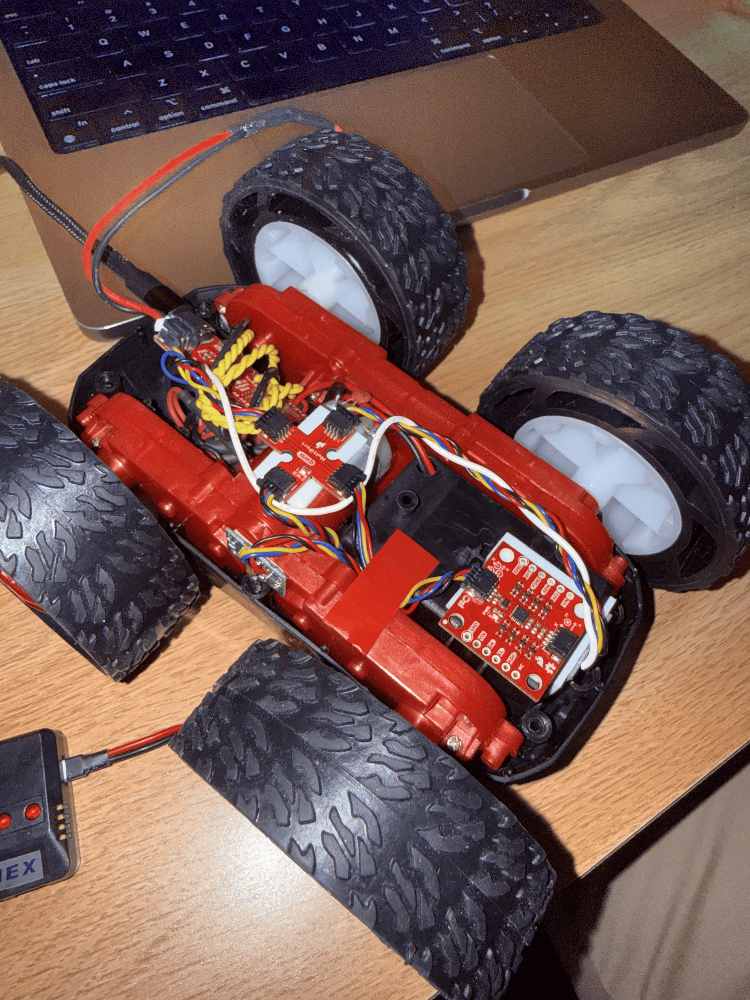
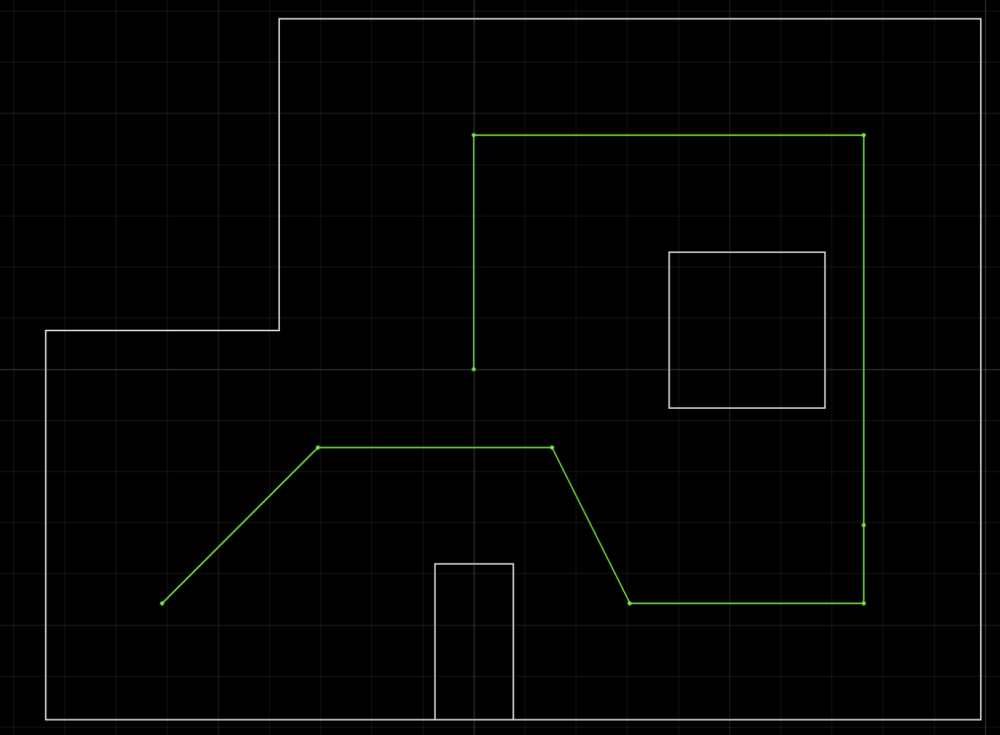
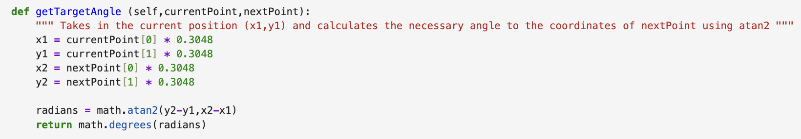
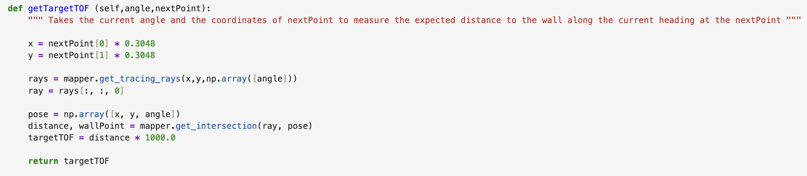
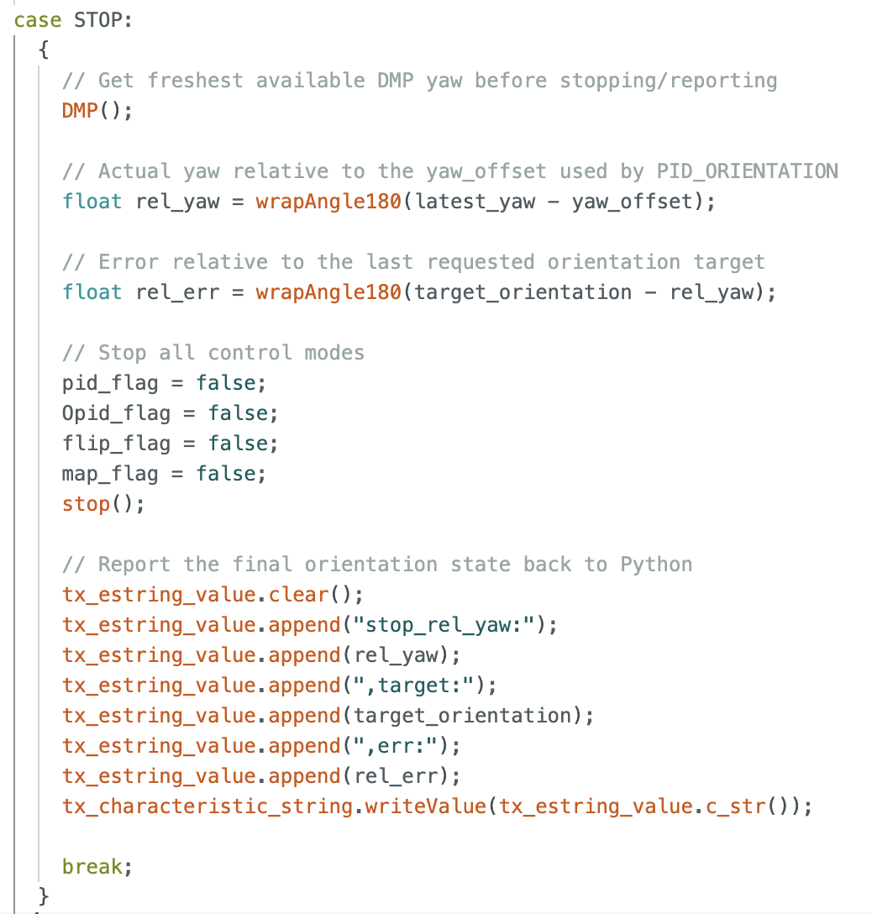
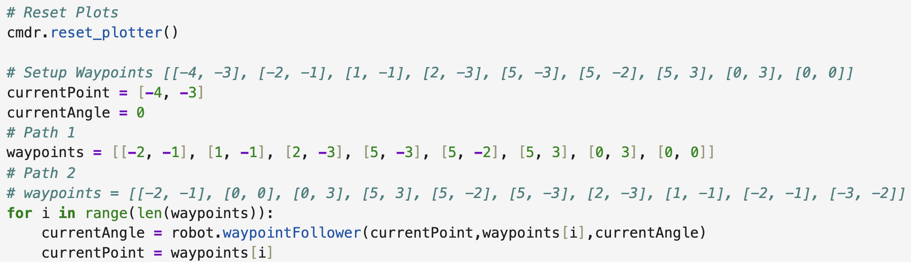
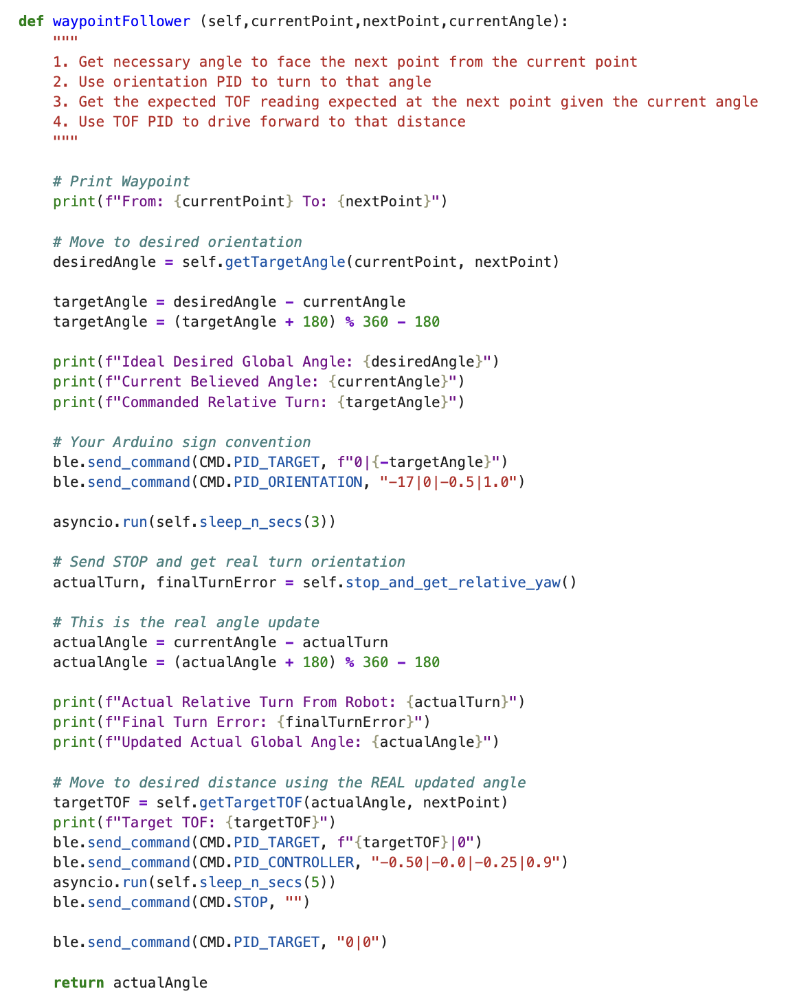
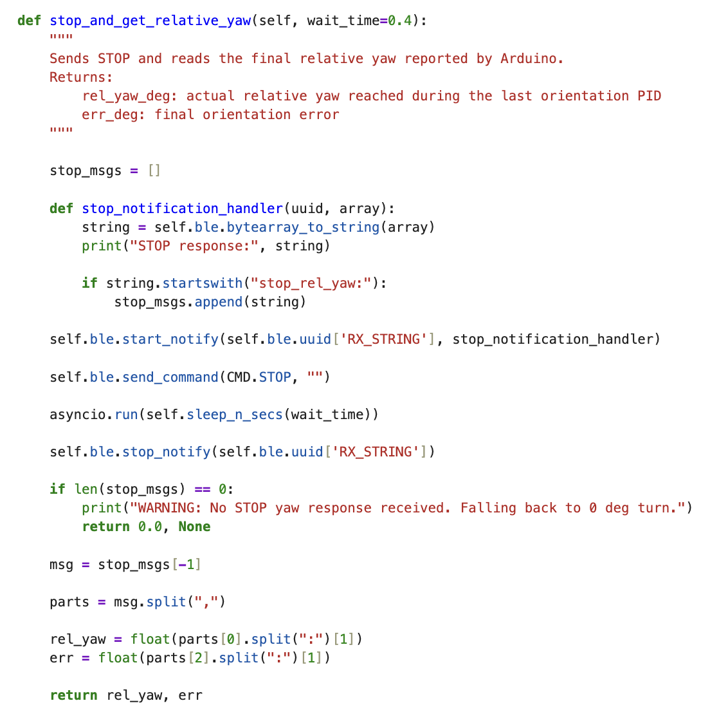
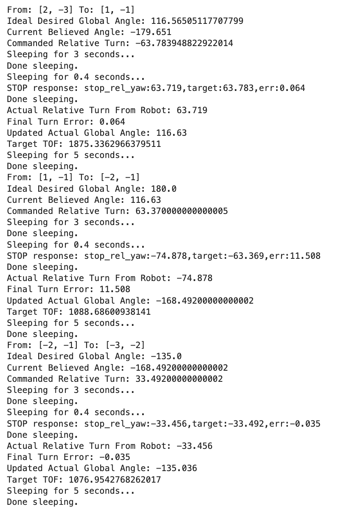

Lab 12: Path Planning and Execution
ECE4160 Fast Robotics — Spring 2026
Connor Lynaugh

Objective
Lab 12’s objective was to combine the robot capabilities developed during all of the previous labs into a complete waypoint navigation system. Up to this point, the robot had BLE communication, ToF sensing, IMU/DMP yaw estimation, closed-loop PID control with Kalman filtering, mapping, and Bayes filter localization. The goal of this lab was to use these components so that the robot could navigate through the assigned waypoint route: (-4, -3) → (-2, -1) → (1, -1) → (2, -3) → (5, -3) → (5, -2) → (5, 3) → (0, 3) → (0, 0).
My main design task was choosing the best combination of planning, control, and onboard/offboard computation for my robot. My final implementation used an offboard Python controller for high-level waypoint sequencing and map-based target calculation, while the Artemis RedBoard Nano handled real-time closed-loop PID control, sensor collection, and BLE command execution.

System Architecture
The Jupyter Lab notebook was used to track the current waypoint, measured heading estimate, desired yaws, and expected ToF distances. The Artemis RedBoard Nano was used to control motor actuation, both distance and orientation PID with Kalman filtering, ToF and IMU sensor readings, and Bluetooth communication. The local Python notebook was responsible for building and updating the simulator and overall control authority.
Software implementation for each waypoint:
1. Use current waypoint and heading estimate
2. Compute the desired global heading to the next waypoint
3. Start orientation PID to achieve the desired heading
4. Stop and read the robot’s actual heading
5. Update Python’s heading belief using measured yaw
6. Using measured yaw, compute expected ToF distance at the next waypoint
7. Start ToF PID to achieve desired distanceImplementation Considerations and Choices
Several implementations were considered. For path planning, I considered using a full global planner such as Rapidly-exploring Random Trees (RRT), since I had just implemented this for Autonomous Mobile Robots. However, because the lab already provided a required waypoint sequence, a full global planner would not significantly improve the route selection problem. The more important challenge was executing each waypoint transition accurately.
For forward motion, I threw out the idea of open-loop timed driving given the surplus of noise and external influence such as battery voltage, tile friction, and motor response. In this case, I chose ToF-based distance control because the front ToF sensor in combination with the Kalman-filtered PID from Lab 7 worked exceptionally well, typically with less than about 20 mm of error. This paired nicely with the simulator because I could derive the expected time-of-flight reading from any given waypoint in the map space, meaning I could pass the desired distance to the PID directly.
For orientation, my robot had already been implementing successful control for Labs 6 and 8-11 with angular thresholds down to 1 degree or less. Thus, I kept this as is and only modified my implementation so that the robot returns its actual final relative yaw over Bluetooth after each turn.
Because I had both reliable forward motion and turning motion, I sought out to test if a closed-loop turn-then-go algorithm would work well on the given map with my tuned robot. Short story is that this proved to work exceptionally well for this lab, and was even able to track a different route as well.
Path Planning and Movement Control
For each movement, Python calculated the desired global heading from the current pose belief to the next waypoint using atan2. The desired heading was then converted into a wrapped relative turn. The wrapping step ensured that the robot took the shortest rotation direction.

After the turn, Python calculated the expected ToF reading at the next waypoint. The getTargetTOF() function converted the target waypoint from feet to meters, cast a ray in the known map from that point using the robot’s final heading, found the nearest wall intersection, and converted the result to millimeters. This value became the target for the forward ToF PID controller.

Correcting Orientation Drift
One of the most important changes was replacing ideal heading updates with measured yaw feedback. Initially, Python assumed that if it commanded a turn to a desired angle, the robot reached that exact angle. However, the Artemis settled within what it believed to be a 2º threshold of the target angle, and these errors could accumulate over multiple waypoint legs.
The Arduino code already used real DMP yaw for orientation PID, so the robot itself was not turning blindly. The issue was that Python did not receive the final yaw after the turn. To fix this, I modified the STOP command behavior so that it also reports the actual relative yaw after orientation PID finishes. Python then uses the actual yaw to calculate the next targetTOF. After this fix, waypoint errors were substantially more reasonable.

Control Loop
The final navigation implementation used a sequential waypoint-following strategy controlled from the Python notebook. The assigned waypoint route was stored as a list of two-dimensional grid coordinates, beginning with an initial known position of [-4, -3] and an initial heading of 0°, since this is where the robot was placed in the map.

The main loop iterated through the waypoint list. For each waypoint, Python called waypointFollower(currentPoint, waypoints[i], currentAngle). This function performed the full motion from the current waypoint to the next waypoint: it turned the robot toward the next waypoint, drove forward using the expected ToF target, and returned the robot’s updated heading estimate. The returned value was stored as currentAngle, so the next leg used the measured final orientation from the previous leg instead of resetting to an ideal heading.
After each leg, the program set currentPoint = waypoints[i]. This means the high-level planner assumed that the robot reached the intended waypoint position before beginning the next leg. This was a deliberate simplification. Since the motor drivers had been repaired and the ToF PID was performing with less than approximately 2% error, assuming the waypoint position after each drive was reasonable for this implementation. However, the heading was not assumed to be ideal. The heading estimate was updated using the robot’s actual final yaw after each orientation PID movement.
This structure made route execution simple and transparent. The computer remained responsible for waypoint sequencing and target calculation, while the Artemis executed the orientation and distance PID loops onboard. This was an important design choice because Bluetooth timing was not fast or reliable enough to run PID from the computer, but it was well suited for sending high-level commands and receiving final pose-related feedback.

Inside waypointFollower(), the robot first calculated the desired heading and commanded orientation PID using PID_TARGET and PID_ORIENTATION. The orientation PID was allowed to run for three seconds, which gave the robot time to settle instead of stopping immediately when it briefly entered the target threshold. This was important because the Artemis considered the turn successful once it was within its local threshold, but even small heading errors could accumulate across the full waypoint route.
After the three-second orientation window, Python called stop_and_get_relative_yaw(). This sent STOP, listened for a BLE message beginning with stop_rel_yaw:, and parsed the actual relative yaw and final turn error reported by the Artemis. This was the key difference from the original implementation. Instead of returning the ideal desired angle, the function updated the heading estimate using the measured yaw.
The sign convention between the Python map frame and the robot’s DMP yaw frame required subtracting the measured turn from the previous heading estimate. This convention was verified experimentally. For example, when Python commanded a turn toward an ideal global heading of 45°, the robot reported a relative yaw of approximately -44.991°, which updated the global heading estimate to approximately 44.991°. This confirmed that the heading update was working correctly and that the orientation PID was not the dominant source of remaining navigation error.
This corrected heading was then used for the rest of the waypoint leg. Specifically, Python calculated the expected ToF target using the measured final heading, sent that target to the Artemis, and started the onboard ToF PID controller. The distance controller was allowed to run for five seconds before STOP was sent again. This gave the ToF PID enough time to approach and settle near the expected wall-distance target. After stopping, the PID target was reset, and waypointFollower() returned the measured final heading estimate.
The final output of waypointFollower() is therefore the measured final heading estimate, not the ideal planned heading. Position was still treated ideally by assigning currentPoint = waypoints[i], but orientation was updated from real robot feedback. Therefore, the main remaining limitation is that forward position error can still accumulate if the robot does not physically stop at the expected waypoint, but the measured-angle update prevents orientation error from accumulating in the same way.

The helper function stop_and_get_relative_yaw() made this feedback loop possible. It temporarily started a BLE notification handler, sent the STOP command, waited for the Artemis response, and then parsed the returned yaw and error values. If no yaw response was received, the function returned a warning and fell back to a zero-degree turn update. This made the system safer because a missing BLE message would not crash the full route execution.
Overall, this control loop was chosen because it directly used the strongest parts of the robot after hardware debugging: accurate orientation PID, accurate ToF PID, and reliable onboard control. A more complicated localization-heavy or global-planning-heavy architecture was unnecessary for the final route because the robot could already execute each local turn-and-drive segment accurately.
Conclusion
Three runs were used to evaluate the final waypoint-following implementation.
Best Run Before Measured-Angle Update
The first video shows the best performance before the measured-angle update was implemented. In this version, Python assumed the robot reached the ideal commanded angle after each turn. The robot was eventually able to complete the route, but only after an overshot angle caused a reverse bump that physically realigned the robot. This showed that the overall waypoint-following structure was viable, but also confirmed that ideal heading assumptions could accumulate into noticeable path error.
Best Overall Run After True-Angle Update
The second video shows the best overall run after implementing measured-yaw feedback. This run completed the regular path cleanly, with no major incidents. The corresponding data printout shows the actual angle returned after each turn and confirms that the robot’s measured heading was being carried forward between waypoint legs.

Alternate Reverse-Style Path
The third video was added to test whether the same implementation could generalize to a different waypoint sequence. This path was essentially the reverse route, with additional waypoints added to make the sequence more complex. The robot still performed very well, which showed that the final controller was not only tuned for one exact path.
Overall, these runs confirmed that passing the actual measured angle between waypoint legs was the most important software improvement, since it significantly improved reliability while preserving the simplicity and speed of the turn-then-drive strategy. The final implementation successfully used the computer for high-level waypoint sequencing and map-based ToF target calculation, while the Artemis handled real-time orientation and distance PID onboard. This was the right design choice for my robot because, after resoldering the motor drivers, both the orientation PID and ToF PID were accurate and repeatable enough to complete the route without requiring a more complex global planner or localization-heavy implementation.
References
I used previous Fast Robots lab implementations as references for the report structure, and used ChatGPT to transform this report into an HTML file.